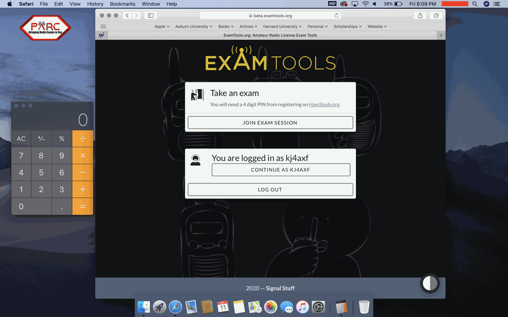

Preparing Your Computer
Main Content
Contact Us:
Our Examiners are all volunteers, not employees. This is not a business, so we do not provide instant responses via email or phone. To reach us, please email the address provided at the bottom of each page. Given that our volunteers have regular jobs, responses may take up to 24 hours, excluding holidays or system outages.
Please refrain from contacting us or the FCC about your license status until ten business days have passed. For quick answers, refer to our FAQ section. Additionally, some of our retired members actively monitor our Facebook Group and can assist with questions there. Use the Facebook button on the Home Page to join the group.
*WARNING* Do NOT touch your phone when we bring you into the exam session. We will be making adjustments to it while you are being given instructions on your computer. Pay attention to your computer ONLY! Failure to do this will result in a feedback loop and your phone being deleted from the exam. If this happens, we have to move to the next applicant while you shut down all your devices and rejoin. We will tell you when you touch your phone. FOLLOW THE VERBAL INSTRUCTIONS CAREFULLY to avoid wasting time.
- When in Waiting Room, do NOT test screen share or any other functions of zoom, doing so will result in you being removed from the session!!!
- TWO DEVICES WITH CAMERAS RUNNING ZOOM ARE REQUIRED FOR THE EXAM SESSION! High-speed internet is needed to take an online exam. This is instructions for the computer setup only.
- A computer must be a PC, Mac or Laptop running Microsoft OS or Mac OS. Some Linux devices may work but many may not. You can NOT use an iPad, notebook, or Chromebook for the main computer to take the exam. You must use Windows 10 or higher. No Windows 7 or older and no Internet Explorer.
- NO EXTERNAL MOUSE OR KEYBOARD IS NEEDED OR ALLOWED to be connected to a laptop!
- You will use ONLY the A, B, C, and D keys on your keyboard to select your answer for the questions. Questions advance automatically during the exam. DO NOT SCROLL or TOUCH YOUR TRACK PAD during the exam!
- You must have a working PC/ laptop computer (not Chromebook) with built-in web cam that looks directly at your face, microphone, and reliable Internet service.
- Be sure the computer is fully charged or plugged in.
- Remove all audio devices, headphones, earbuds, smartwatches, hats, and anything that could be considered suspicious and unnecessary for the exam. No external mouse or Keyboards on laptop. Does not apply to desktops.
- Disable any chat, alerts, Bluetooth connections, virtual screens, or pop-up apps.
- Close ALL applications except Zoom and optional calculator app. DO NOT HAVE ANY BROWSERS OPEN WHEN WE START SCREEN SHARE!!!
- No, we do not need your PIN, FRN, or any browsers of any kind running. This will slow us down while we tell you to close everything down except the calculator app and zoom session. Zoom must run as an APPLICATION! It cannot be in a browser!!! No external Mouse or Keyboards is permitted when using a lapto, you must have a wired keyboard and mouse for a desktop.
- You must have only one display screen running on the computer. Disable or cover any virtual screens. The exam team may end the exam immediately for non-compliance. Make sure the background shows.
- NO VIRTUAL BACKGROUNDS OR BLINDS, we must see the entire room!
- The exam is only three and a half to four inches wide and not very tall, you will be asked to shrink your browser to fit between the calculator on the left side of the screen and Zoom videos on the right side of the screen.
- Set your screen up like the images below:

- You may optionally have a computer calculator app on your screen during the exam. Load it in advance if you need it. You will need it to be small and placed on the LEFT HAND side of the monitor screen. Calculator must be basi, standard, or occupy the same vertical space as shown in the figure above.
- Download Zoom on both computer and phone and TEST them. Join audio on the computer but not the cell phone. IT IS IMPERATIVE THAT YOU PRACTICE USING ZOOM AND KNOW HOW TO USE IT. You cannot use zoom in a browser.
- ALREADY HAVE A ZOOM ACCOUNT? MAKE SURE YOU FOLLOW THESE INSTRUCTIONS:
If you already have a Zoom account, please LOG OUT of your Zoom account before clicking our link to join the exam. Otherwise you will be connected via your own Zoom account. You will not be offered the opportunity to correctly set the "name - computer/phone" as required in the instructions. First, open the app on both of your device(s), and sign out from your account prior to clicking on the Exam Session link. Then, join using our link in the email for both of your devices. You will then be given the opportunity to put in your name before joining the session. This is where you put your name and whether it is computer or phone. Then select to continue and join session. - Turn on video when in Waiting Room on both your computer and your cellular phone. Turn on the audio and unmute your microphone on the computer only. DO NOT accept audio on your cellular phone. Again, it is VERY IMPORTANT that you decline/deny audio on your cellular phone before joining or when in waiting room if you can. If not, we will bring your phone in and out of main room to disconnect audio. Do NOT put hands on phone when we are doing this, we are turning off your audio to prevent feedback. No matter what you see on the screen, do NOT pick up your phone. Pay attention to your computer only. Put your phone down.
Contact Us:
Our Examiners are all volunteers, not employees. This is not a business, so we do not provide instant responses via email or phone. To reach us, please email the address provided at the bottom of each page. Given that our volunteers have regular jobs, responses may take up to 24 hours, excluding holidays or system outages.
Please refrain from contacting us or the FCC about your license status until ten business days have passed. For quick answers, refer to our FAQ section. Additionally, some of our retired members actively monitor our Facebook Group and can assist with questions there. Use the Facebook button on the Home Page to join the group.